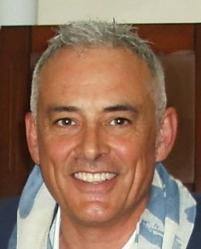

Vigilanza e sicurezza
Direzione operativa e coordinamento del Corpo di Polizia Locale, controllo documentale e Protezione Civile.
Vice Comandante della Polizia Locale · Sociologo
Elevata Qualificazione Professionale nell'Amministrazione Pubblica. Coniugo l'esperienza sul campo nella sicurezza e vigilanza urbana con solide competenze sociologiche, analisi delle dinamiche sociali e innovazione digitale applicata alla Pubblica Amministrazione.
Entra in contatto
Dal 1997 opero nel settore della sicurezza pubblica e dell’amministrazione locale. Ho iniziato la mia carriera presso il Comune di Fasano e, dal 2006, presto servizio presso il Comune di Carovigno, dove ricopro il ruolo di Vice Comandante del Corpo di Polizia Locale. Nel corso di quasi trent’anni di attività ho maturato esperienza nella sicurezza urbana, nella vigilanza del territorio e nella gestione di attività e procedimenti amministrativi.
Il mio percorso professionale è affiancato da una formazione in sociologia, con particolare approfondimento dei temi del crimine e della devianza. Questa prospettiva, insieme all’esperienza sul campo, mi consente di leggere con attenzione le dinamiche sociali e i bisogni della comunità.
In ambito sociale ho collaborato con l’associazione A.V.U.L.S.S. come relatore sul tema della genitorialità, partecipando a incontri organizzati nelle scuole secondarie. Ritengo che competenza, senso di responsabilità e attenzione alle persone siano elementi essenziali per una Pubblica Amministrazione moderna ed efficace.
Direzione operativa e coordinamento del Corpo di Polizia Locale, controllo documentale e Protezione Civile.
Analisi sociologica e antropologica di crimine e devianza; interventi su genitorialità e prevenzione del disagio giovanile.
Qualifica di Programmatore, software gestionali P.A., intelligenza artificiale, cybersicurezza e gestione dei dati.
Gestione di spese ed entrate, procedimenti amministrativi, incarichi organizzativi e attività di ufficiale di riscossione.
Comune di Carovigno. Incarico di Elevata Qualificazione Professionale; Vice Comandante dal 2022.
Università del Salento · Funzione Pubblica. Corso post-laurea in Prompting e Tecnologie I.A.; badge Syllabus avanzato in Intelligenza Artificiale e Open Data.
Laurea magistrale in Sociologia e Ricerca Sociale; avanzamento a Ispettore Superiore di Polizia Locale.
Università del Salento. Curriculum Crimine e Devianza, con tesi su devianza e normalità in prospettiva antropologica.
Comune di Carovigno. Agente, Vice coordinatore del Servizio e, dal 2015, Sottufficiale; responsabilità organizzative nei settori Randagismo, Polizia Locale e Protezione Civile.
Comune di Fasano · Servizio operativo e vigilanza nell’Area Vigilanza dell’Amministrazione comunale.
Vittoria Assicurazioni · Consulenza assicurativa e gestione dell’area commerciale.
Disponibile per collaborazioni istituzionali, interventi accademici, convegni o attività di consulenza legate alla sicurezza urbana e alla sociologia della devianza.
gennaro.cesaria@gmail.com P.E.C.: gennaro.cesaria@pec.it Tel: +39 338 650 7329Carovigno (BR), Puglia · Nazionalità italiana